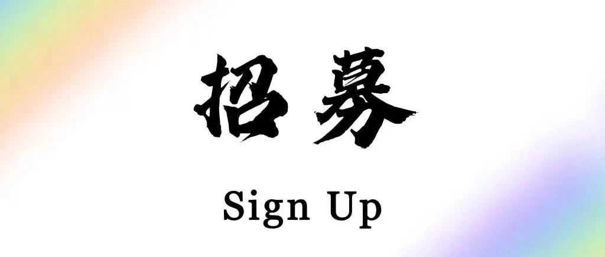

招募｜彩虹受访者 Join us!
你是否是校园彩虹人群？
你是否有感到过/正在经历身份认同和出柜的挣扎？
你是否觉得孤立无援？
Go RYV !!! 🌈
RYV，全称 Rainbow Youth Voice 彩虹新声。
自「未命名」以来，我们不断关注校园彩虹人群，并通过身边人意识到校园🌈群体往往在最 struggle 的年纪里更缺少 support。
因此，我们希望通过纪实采访的方式，采访当代校园彩虹人群的生存实况，无论你是在痛苦挣扎、经历了先苦后甜，抑或恰巧遇到了很理解的朋友和人，我们都欢迎你成为我们的受访者，讲出你们的故事，tell and be seen，我们渴望通过多媒体的方式记录最真实的成长，而不是让这段属于🌈的故事消失殆尽。更重要的是，我们希望校园彩虹人群可以在这里收获一个开放包容支持的社群，不再孤立无援。
我们承诺做到（如果您期待加入也请您承诺做到）：无任何形式的歧视、保持包容支持的环境、尽力而为，对于不想透露的受访者的信息严格保密。
如果看到这里您想加入我们，就请点击「阅读原文」报名吧！我们的工作人员将尽快联系您。
受访者需为15-22岁在校高中生或大学生。
我们期待您的加入！
Rainbow Youth Voice 彩虹新声🌈
微信号：RYV_Official
新浪微博：@ryv彩虹新声
小红书：RYV彩虹新声🌈